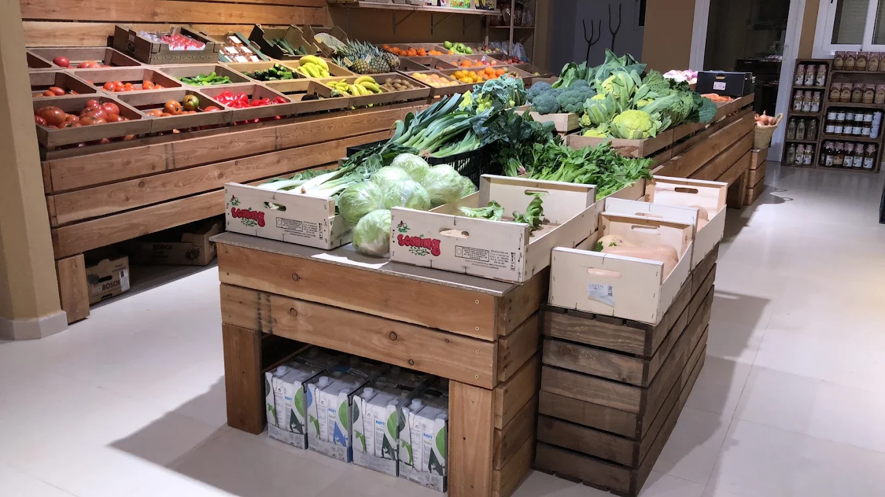
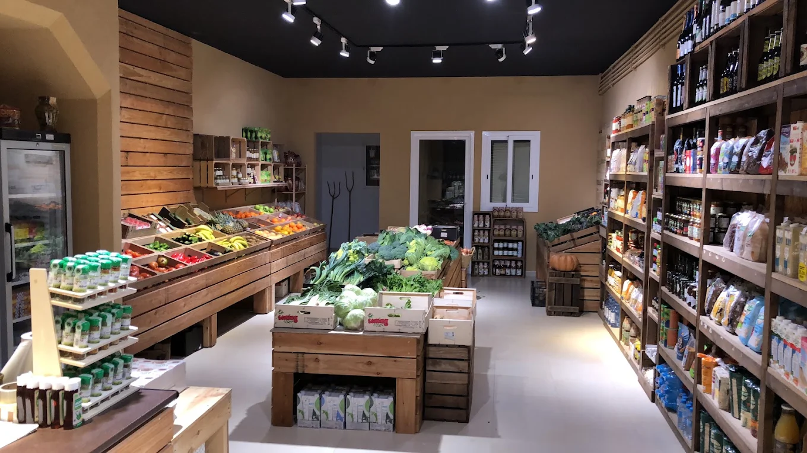
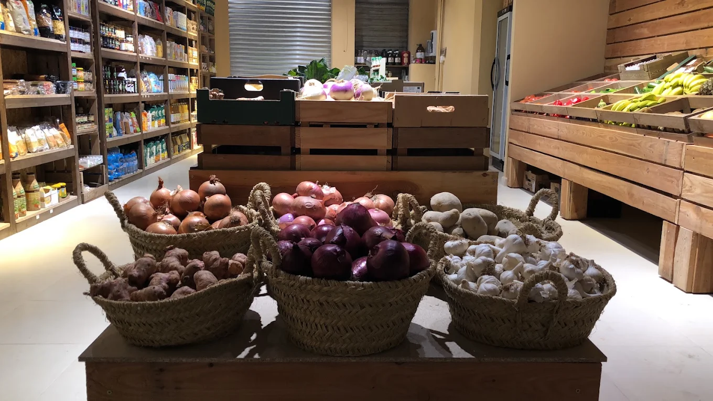
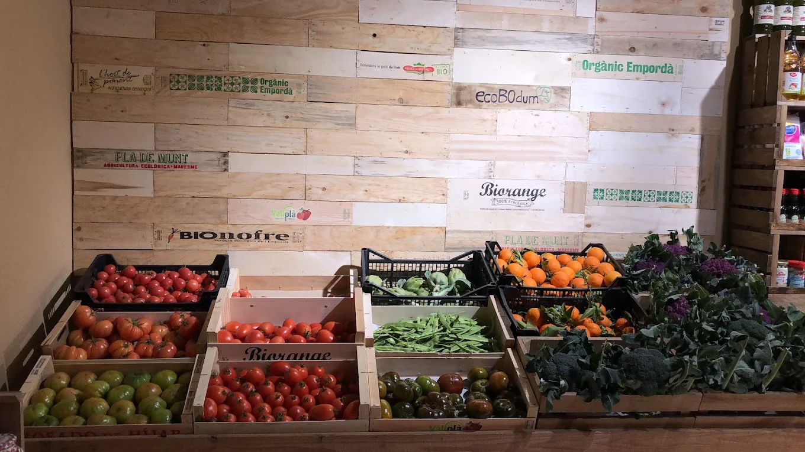
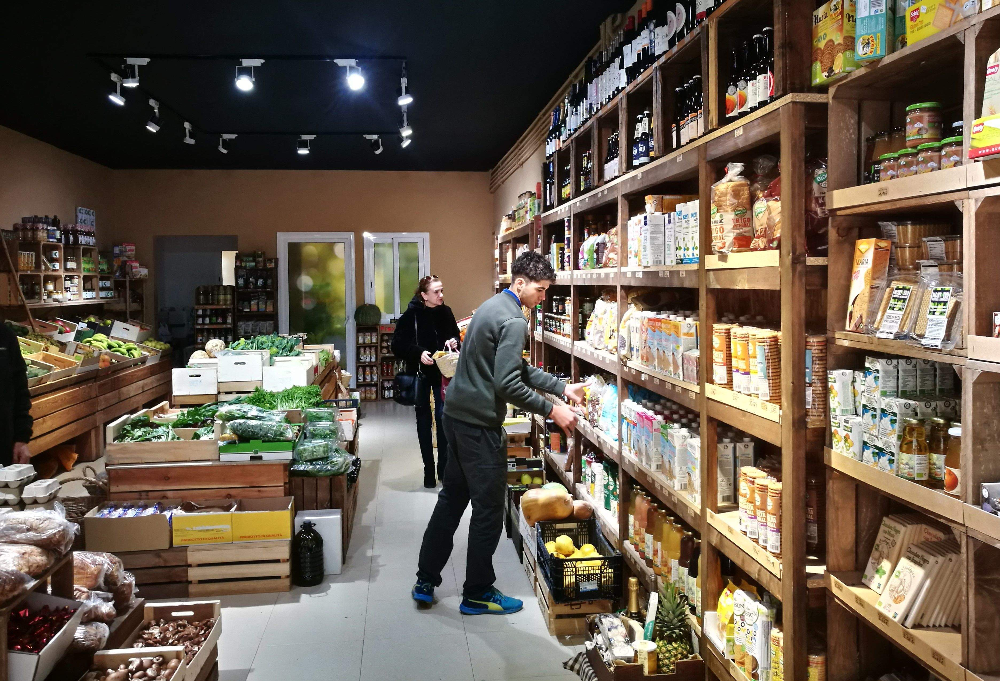

MontVerd, fruiteria de proximitat a Rubí
Fruiteria i alimentació.

EL QUE BUSQUES
Els nostres productes
Alguns dels nostres productes mes frescos.


DEL CAMP A LA TEVA TAULA
Productes de proximitat
Treballem amb pagesos de la zona per afavorir el comerç local i poder tenir els productes més frescos.
Proximitat
Prioritzem els productes propers.
Temporada
Escullim els productes més adequats a la temporada.
Frescor
Escullim cada producte amb la millor qualitat.
SOBRE NOSALTRES
Una frutería de barri amb el sabor de sempre.
Som un petit comerç dedicat a oferir fruites i verdures fresques, apostant pels productes locals i de temporada. Et convidem a venir algun dia a la nostra botiga i poder descubrir els nostres productes.
